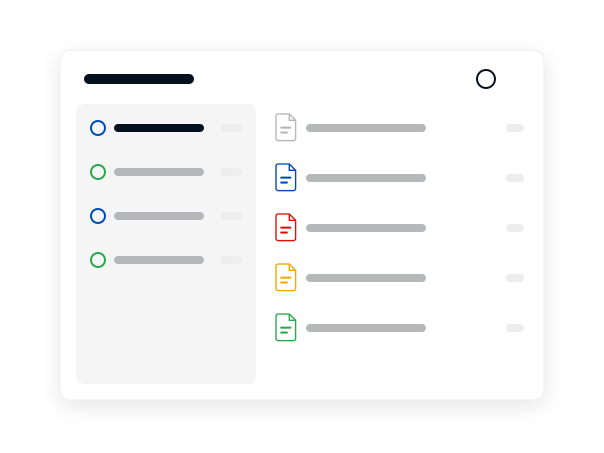

MEGAcmd backup
MEGAcmd backup and sync: schedule Mega backups from the command line
A MEGAcmd backup copies a local folder to your Mega cloud drive on a schedule and keeps a set number of dated copies. This guide follows Mega's own user guide for MEGAcmd 2.7.0 and uses its command names.
Free account with 20 GB. Paid plans add storage.
On this page
A MEGAcmd backup is set up with one command: backup, followed by the local folder, the cloud folder, a period and the number of copies to keep. The first run starts at once and later runs follow the schedule, each creating a dated copy. Backups and syncs are tied to your session, so logging out removes them.
This is an independent guide, not Mega's website. Buttons lead to the official Mega site and may be affiliate links; if they are, the price you pay does not change. Facts were checked on 6 November 2026 against Mega's public GitHub repositories and its App Store listing.
Before you start
MEGAcmd backup and sync commands run in Mega's terminal client, a separate program from the desktop app. It has an interactive shell and scriptable commands that start with the prefix mega, such as mega-put and mega-export, and a background server that starts on demand.
You need a Mega account and enough free storage for the copies you plan to keep. The pricing page covers the free 20 GB plan and the paid tiers. If you would rather use windows and menus, the desktop app does the same job, and the download page explains how to get it.
- Linux: commands are installed to /usr/bin and the interactive shell is mega-cmd
- macOS: install from the DMG, then add /Applications/MEGAcmd.app/Contents/MacOS to your PATH to use the commands in Terminal
- Windows: the shell is MEGAcmdShell.exe; for scripts, add %LOCALAPPDATA%\MEGAcmd to your PATH
- QNAP and Synology: install the package from the App Center or Package Center and enable home folders so the local cache is kept

Other useful commands
- put uploads files or folders to a cloud folder; get downloads a cloud path or a public link
- export -a creates a share link and export -d disables it; --expire sets a time limit and --password protects the link
- webdav serves a cloud location over WebDAV on the local machine at a port you choose; ftp does the same over FTP
- transfers lists running uploads and downloads; -p pauses and -c cancels one by its tag
- speedlimit shows or changes upload and download limits
- du prints the size of cloud files and folders

Limits to know
The example period string has six fields separated by spaces. Check the built in help for the backup command for the exact format before writing your own schedule. In bash, an exclamation mark inside a link can trigger an event not found error, so escape it with a backslash.
Mounting cloud folders through FUSE works on Linux and Windows but not on macOS. Supported systems for the desktop app are a separate list, on the system requirements page. If you want a terminal client from a different provider, the alternatives page notes which services list one.
Key facts
Tool
MEGAcmd, Mega's terminal client
Guide version
2.7.0
Systems
Linux, macOS, Windows, QNAP, Synology
Backup options
--period and --num-backups
Sync model
Two way
Checked
2026-11-06
Set up a scheduled backup
- Log inIn the shell, type login followed by your email and password. If the account uses two factor authentication, add the option --auth-code=XXXX with the current code. Logging in downloads your account structure into a local cache.
- Check your spaceRun df -h to see storage figures, or whoami -l for account details and open sessions. Make sure the copies you plan to keep will fit.
- Create the backupUse the form from Mega's guide: backup /path/mega/folder /remote/path --period="0 0 4 * * *" --num-backups=10. The guide says this example backs up immediately, then every day at 4am, and keeps the 10 most recent copies.
- Read the historyRun backup -h to list past runs. Each run creates a dated copy in the cloud folder, with a name that ends in a timestamp, and the history shows its status and file and folder counts.
- Add a sync if you want oneFor a two way mirror, use sync /path/to/local/folder /folder/in/mega. Additions and deletions on either side are applied to the other. You can create several sync pairs.
- Stay logged inDo not log out when you finish. Logging out clears the local cache and wipes sync, backup and WebDAV configurations. The option --keep-session on logout keeps the session so it is restored the next time the program runs.
Backup or sync
The two commands answer different needs. Use a backup for folders you want to be able to roll back, and a sync for folders you edit on more than one device.
| backup | sync | |
|---|---|---|
| Direction | Local folder to cloud | Both directions |
| Schedule | Set with --period | Continuous |
| History | Dated copies, count set with --num-backups | Current state only |
| Deletions | Earlier copies remain until rotated out | Mirrored to the other side |
| Removed files | Not applicable | Moved to a debris folder first |
The guide notes that files removed by a sync go to a hidden debris folder inside the local sync folder, or to a SyncDebris folder in the cloud rubbish bin. Two devices can sync the same cloud folder; changes travel through your account, not directly between the devices.
Get Mega and MEGAcmd from the official site
Both the desktop app and the terminal client are published by Mega. Start with a free 20 GB account.
Windows Windows 10 or later, Windows Server 2019 or later
macOS 10.15 Catalina or later
Linux Debian, Ubuntu, Mint, Fedora, CentOS
Frequently asked questions
What is MEGAcmd?
MEGAcmd is Mega's command line client for its cloud storage. It has an interactive shell, scriptable commands and a background server, and it runs on Linux, macOS, Windows and some NAS systems.
How do I schedule a backup with MEGAcmd?
Use the backup command with a local folder, a cloud folder, a period and a copy count, for example --period="0 0 4 * * *" --num-backups=10. Mega's guide says that example runs at once, then daily at 4am, and keeps the 10 most recent copies.
Why did my MEGAcmd backups disappear?
Backups, syncs and WebDAV setups are tied to the session. Logging out wipes them, so stay logged in or log out with the --keep-session option.
Is a MEGAcmd sync two way?
Yes. Additions and deletions in either the local folder or the cloud folder are applied to the other. Removed files are moved to a debris folder first.
Can MEGAcmd serve my files over WebDAV?
Yes. The webdav command serves a cloud location on the local machine at a chosen port, with an option for TLS. An ftp command works the same way.
Does MEGAcmd work on a NAS?
Mega's guide describes packages for QNAP and Synology. On both, home folders must be enabled so the local cache is preserved.